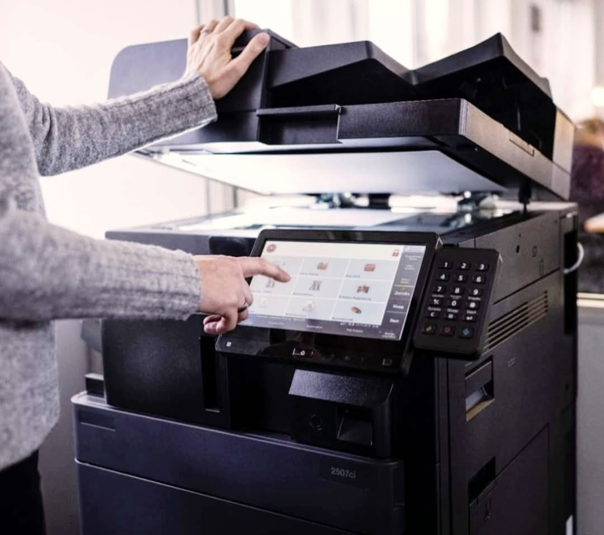

Olivetti
d-Copia 3524MF
A4 · Bianco e neroStampa, copia e scansione; gamma da 35 pagine/minuto.
Soluzioni di stampa per uffici, aziende, scuole ed enti pubblici.
Vendita, fornitura e noleggio di sistemi multifunzione per stampa, copia e scansione, con soluzioni adatte alle esigenze operative di ogni ambiente di lavoro.
Consulta una selezione di modelli documentati dai produttori e richiedi informazioni per vendita, fornitura o noleggio.

Stampa, copia e scansione; gamma da 35 pagine/minuto.
Multifunzione a colori per gruppi di lavoro; fino a 35 pagine/minuto.
Sistemi laser professionali per documenti A3; fino a 25/35 pagine/minuto secondo il modello.
Multifunzione per elevati volumi; 50/60 pagine/minuto secondo il modello.
Multifunzione Ricoh per i flussi documentali aziendali; configurazione e disponibilità da verificare.
Soluzione Ricoh per la gestione e la stampa documentale; dettagli da verificare su preventivo.
Multifunzione laser a colori con stampa, copia e scansione; fino a 25 pagine/minuto A4.
Sistema multifunzione a colori A3, 35 pagine/minuto A4, fax opzionale.
Fotografie illustrative della categoria, non dei singoli modelli. Specifiche e configurazioni secondo i produttori; disponibilità e condizioni commerciali da confermare.
Contattaci per approfondire disponibilità, soluzioni e modalità di fornitura o assistenza.
Vai ai contatti →